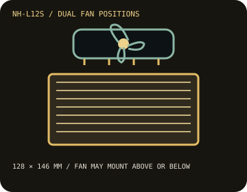

[ INDIVIDUAL COMPONENT // COOLING ]
Noctua NH-L12S
A 120 mm, 15 mm-thick fan sits below or above this 128 × 146 mm top-flow heatsink, changing the cooler's total height from 70 to 86 mm.

IDENTIFICATION: The documented cooler is the standard NH-L12S bundle with NF-A12x15 PWM fan and SecuFirm2 mounting system; check the supplied socket hardware and product revision.
Manufacturer specifications
| Overall dimensions | 128 × 146 × 86 mm with fan in top position; 128 × 146 × 70 mm with fan under the fins. Included NF-A12x15 PWM is 120 × 120 × 15 mm. |
|---|---|
| Fan / thermal limits | NF-A12x15 PWM, 0–1,850 RPM maximum, 94.2 m³/h airflow, 1.53 mm H₂O, 23.9 dB(A) maximum; 4-pin PWM. No radiator. Noctua's NSPR is 88, a comparative rating rather than a wattage or guaranteed CPU TDP limit; use its CPU compatibility listing. |
| Mounting kit and sockets | SecuFirm2 mounting supplied for supported Intel LGA 1851/1700/1200/115x and AMD AM5/AM4 sockets; older or workstation sockets require a compatible separate kit or are not supported. Verify the exact CPU and board in Noctua's compatibility center. |
| Clearance caveats | Case must allow 70 mm height with fan underneath or 86 mm with fan above. Top fan arrangement limits RAM height to about 45 mm; below-fin placement reduces height but RAM, heatsinks, PCIe, and board-specific component clearances must still be checked. |
Safe installation and maintenance
Use the included SecuFirm2 parts and the NH-L12S instructions for the target socket. Confirm the selected fan position against the case height and DIMM profile before mounting. Do not treat the NSPR number as a CPU wattage guarantee.
- Check Noctua's motherboard-specific memory/PCIe compatibility data before purchase.
- Disconnect power before service and confirm the PWM fan spins freely after reassembly.
Manufacturer sources
- Noctua — NH-L12S specificationsPublished dimensions, fan data, weight, and NSPR.
- Noctua — NH-L12S CPU compatibilityManufacturer compatibility guidance for CPU and mounting support.
- Noctua — NH-L12S motherboard compatibilityBoard-specific clearance reference.
- Noctua — NH-L12S infosheet (PDF)Official product data sheet with dimensional and fan specifications.
Static catalog reference only; use the current compatibility center for the exact host configuration.